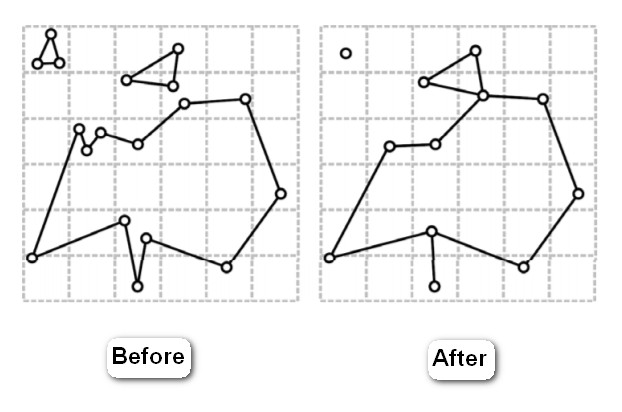

前言
在Computer Graphics的應用中，Render Performance和Render Quality都是要同時注意的，這時候找到平衡點就變成很重要的事。
有時候網格作太細，或是Render的Device Resolution限制，並無法造成Render Quality提升，還讓Render Performance下降，這時候就會考慮使用Mesh Simplification方法，進一步生成不同細節層次(LOD, Level of Details)的模型，降低Mesh Size，取得平衡。 網格簡化一般分成
- 靜態簡化 : 靜態簡化就是預先計算好一系列不同簡化率的模型，在實時運行的程序中可以按照模型View Point的距離選擇不同版本的模型進行渲染。
- 動態簡化 : 一般使用局部的幾何變換來實現，生成具有連續的具有不同分辨率的近似模型。
LOD (Level of Details)
LOD是Level Of Details的縮寫即多層次細節。在計算機圖形學中，LOD就是為了支持當物體遠離觀察者或者物體的重要程度不同，位置不同，速度不同或者視角相關的參數不同需要減少渲染3D模型的複雜度。
Example :
一個非常漂亮的建築，頂點數和面數一定很多，玩家在遊戲中控制人物相機視角離建築很近時，看起來非常好看，當玩家走遠的時候，這座建築還在相機視線內，但距離已經很遠了，看起來不是那麼清晰了，但由於建築的模型精度太高，無論遠近模型的頂點和面數都不變，性能開銷不變，當你的遊戲裡面有很多這樣的建築時，這時就需要使用LOD技術來節省性能開銷了。
靜態簡化
Vertex Clustering
這方法最早是1993年在Rossignac J, Borrel P. Multi-resolution 3D approximations for rendering complex scenes這一篇提出。
這方法思路比較簡單，就是用一個Bounding Box包住整個模型，然後裡面分成許多小的立方體區域，最後落在同一個立方體區域的Vertex會被處理或是合併 優點 : 速度很快 缺點 : 容易造成三角形退化，網格的Topology結構容易被破壞。 
Re-tiling 重新佈點法
最早是1995年He T, Hong L, Kaufman A, et al. Voxel based object simplification這一篇提出。
重新佈點的意思是，在原模型表面上重新分佈頂點以改變頂點在空間中的分佈密度，然後再對這些頂點進行三角化。是一種基於體素(voxel)的網格簡化方法，也就是先對原模型進行Voxelization，然後對體素模型進行不同分辨率的降採樣（也就是不同帶寬的低通濾波），然後再用MarchingCubes移動立方體算法重構出三角形網格。
動態簡化
層次表示法
用靜態化簡的方法預先生成一系列的LOD模型，然後再實時地選擇對應的模型，實時地按”對外觀的貢獻程度”刪除三角形，直至精度達到給定要求時停止，並且渲染出來。
漸進網格法(Progressive Mesh)
這個方法以邊坍縮(edge collapse，之前提到的幾何元素刪除方法之一)與點分裂(Vertex Splitting)為基本操作，記錄了模型在連續的簡化過程中的拓補變動信息，於是就可以做到基於視點的(view-dependent)、無損的(lossless)、可複原的連續簡化，這樣子在攝像機靠近模型的過程中，就不會出現切換LOD模型產生的視覺突變的狀況。
Real-time optimally adapting mesh (ROAM)
- ROAM是一種Real Time優化地形網格的方法。
- 在現代計算機上，有時將少量不需要的多邊形發送給GPU更為有效，而不是給CPU負擔LOD(Level of Details)計算，這使諸如geomipmapping之類的算法比ROAM更有效。 使用此技術以產生高質量的顯示，同時又能夠保持實時幀速率。 存在諸如ROAM之類的算法來提供對場景質量與性能之間的控制，以便提供HQ場景，同時在硬件上保留實時幀速率。
- ROAM主要針對地形可視化，但是ROAM中的各種元素很難放在遊戲系統中。
Reference
- Mesh Simplification CS468課程投影片
- Mesh Simplification CS3621課程投影片
- Rossignac J, Borrel P. Multi-resolution 3D approximations for rendering complex scenes, 1993
- He T, Hong L, Kaufman A, et al. Voxel based object simplification, 1995
- 网格简化与LOD(Level of Detail)
- 探索游戏中的LOD技术 - 网格简化
- Level of Details for 3D Graphics, Source Code